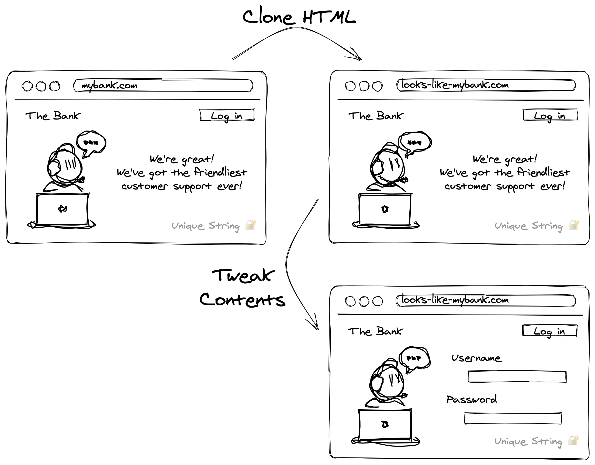
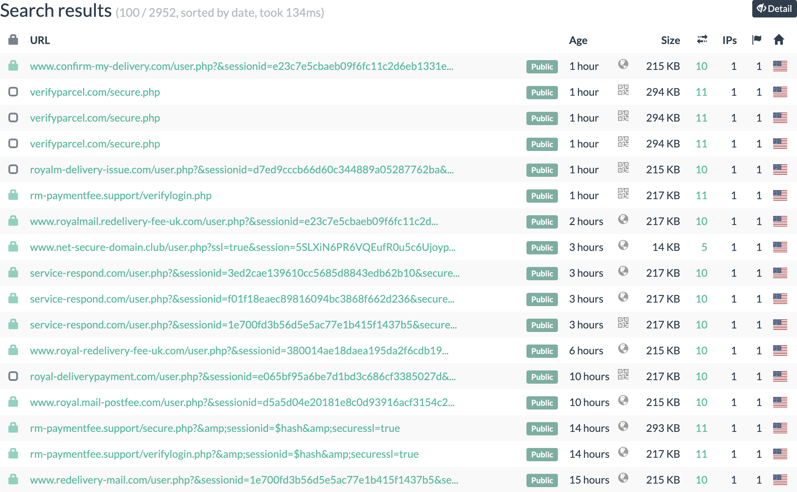

You’d expect phishing sites to be hard to detect and track, but actually, many of them contain HTML fragments that uniquely identify them.
One example doing the rounds at the moment is a bunch of Royal Mail phishing sites which all contain the string css_4WjozGK8ccMNs2W9MfwvMVZNPzpmiyysOUq4_0NulQo.
These sorts of long, random strings are extremely good indicators for tracking phishing sites.
Any webpage that contains css_4WjozGK8ccMNs2W9MfwvMVZNPzpmiyysOUq4_0NulQo is almost certainly an instance of that Royal Mail phishing kit.
But how did such a unique string like this end up in a phishing kit?
We’re—perhaps unfortunately—not in the parody world of RFC 3514 where all IP packets include a flag signalling if they’re malicious. No, these identifying strings are being included completely unintentionally by phishing kit creators. Oops!
How phishing kits are born
Phishing sites try to look as close as possible to the real website they target. However, most phishers don’t have the skill to actually replicate a company’s website. Instead, they take a shortcut and just clone the original website’s HTML and make some small tweaks to it.
The process to clone a target website and turn it into a phishing kit is roughly:
- Clone the target website using a tool like HTTrack or even just click File→Save in a web browser.
- Tweak the HTML to add a form asking for the victim’s personal information.
- Glue this together with a PHP backend to save the harvested data.
This kit can then be easily deployed onto a cheap hosting provider and be ready to collect victims' details.

By just copying the webpage in its entirety, the phisher gets a super realistic phishing page with very little skill or effort. But, this shortcut means their phishing page is full of things they don’t actually need.
In particular, any high-entropy strings in the original website are likely to accidentally end up in the final phishing kit. Which is great for us because looking for the presence of specific high-entropy strings is a very easy and reliable way to detect phishing sites.
64a9e3b8) or just because it’s long enough (e.g. this sentence).
The logical question is then: why would there be high-entropy strings in the original website? It turns out that, with modern development practices, websites are full of high-entropy strings!
Sources of high-entropy strings in webpages
Modern websites are rarely 100% static content. Current development practices and web security features mean there’s a range of ways that long, random strings can end up in a website. Here’s an overview of the different sources I’ve seen:
| Entropy source | Commonly seen? | Entropy |
|---|---|---|
| Hashes in filenames | Very common | ≥32 bits |
| Version control references | Common | ≥32 bits |
| SaaS API keys | Common | ≥64 bits |
| CSRF tokens | Common | ≥64 bits |
| Content Security Policy (CSP) Nonces | Uncommon | ≥128 bits |
| Subresource Integrity (SRI) hashes | Uncommon | ≥128 bits |
1. Hashes in filenames
Modern websites are often processed with a “bundler” like Webpack or Parcel that combine all the JavaScript and CSS into a single set of files.
For example, a website’s sidebar.css and footer.css might get combined into a single styles.css file.
To ensure that browsers get the right version of these files, bundlers often include a hash in the filename.
Yesterday your webpage might have used styles.64a9e3b8.css but, after updating your stylesheets, it now uses styles.a4b3a5ee.css.
This change of filename forces the browser to fetch the new file rather than relying on its cache.
But these high-entropy filenames is exactly how a recent Royal Mail phishing kit incriminated itself. Oops!
When the phisher cloned the real Royal Mail website, the HTML looked like this:
<head>
<!-- snip -->
<title>Royal Mail | Royal Mail Group Ltd</title>
<link rel="stylesheet" media="all" href="/sites/royalmail.com/files/css/css_4WjozGK8ccMNs2W9MfwvMVZNPzpmiyysOUq4_0NulQo.css">
<link rel="stylesheet" media="all" href="/sites/royalmail.com/files/css/css_o79zfvrPVtt1el1UR50-mD-0ef6IbhXxay58w8XDA0Q.css">
<!-- snip -->
</head>
Unfortunately for the phisher, whatever technique they used to clone the website didn’t change the filenames. As a result, it’s trivial to find lots of phishing sites using CSS with this filename via urlscan.io:

2. Version control references
Any website targeted by phishers is very likely being developed by a team of people and they’re probably going to be collaborating using a version control system (VCS) for example git.
A reasonably common choice is to embed a reference from the VCS into each build of the website. This helps with tasks like correlating bug reports to what version of the code was running at the time.
For example, the Monzo website embeds the git commit hash using a small JavaScript snippet:
var GIT_COMMIT = '444d069468754a26ff2b59495dd71b199a5d6941';
var GIT_BRANCH = 'master';
VCS references are great for blue teams because they’re so easy to look up in the version control system. If you find a phishing site that’s accidentally included a VCS reference, it’s straightforward to look up exactly when that version of the site was written (and so when the site was cloned).
3. SaaS API keys
Websites often use all sorts of 3rd party services like Intercom or reCAPTCHA. To use these services, the website usually needs to include the relevant JavaScript library as well as an API key.
For example, Tide use reCAPTCHA and include this snippet as part of their integration:
<script type="text/javascript" id="wpcf7-recaptcha-js-extra">
/* <![CDATA[ */
var wpcf7_recaptcha = {"sitekey":"6Lclb0UaAAAAAJJVHqW2L8FXFAgpIlLZF3SPAo3w","actions":{"homepage":"homepage","contactform":"contactform"}};
/* ]]> */
</script>
Because a reCAPTCHA “sitekey” is unique to each website, any page that contains the string 6Lclb0UaAAAAAJJVHqW2L8FXFAgpIlLZF3SPAo3w and isn’t on tide.co is very likely a cloned site.
Although SaaS API keys are highly unique and make good indications, they change very infrequently and so can’t help distinguish between different phishing kits cloned from the same website. A website may use the same API key for years and so all kits created in that time would include the same key. For the same reason, API keys aren’t any help for identifying when a phishing kit was created.
4. Cross-Site Request Forgery (CSRF) tokens
Turns out lots of web security best practices also make for great phishing indicators. The most common of which is probably “Cross-Site Request Forgery” (CSRF) tokens.
Briefly, CSRF is a vulnerability where a malicious website can trick users into performing authenticated actions on the target site.
For example, this HTML creates a button that when clicked sends a POST request to https://example.com/api/delete-my-account":
<form method="post" action="https://example.com/api/delete-my-account">
<input type="submit" value="Click me!">
</form>
If example.com doesn’t defend against CSRF, it will process this request and delete the unsuspecting user’s account.
The most common way to defend against CSRF is using a so-called CSRF token. This is a random value embedded in each webpage that the server expects to be sent back alongside sensitive requests. For example, example.com’s actual “delete my account” button could look like this:
<form method="post" action="/api/delete-my-account">
<input type="submit" value="Click me!">
<input type="hidden" name="csrf_token" value="<randomly generated value>"
</form>
And the server would reject any request that didn’t contain the expected random value.
CSRF tokens are excellent for detecting phishing sites because, by design, they’re unique.
5. Content Security Policy nonces
Content Security Policy (CSP) is a newer layer of security to help protect against Cross-Site Scripting (XSS) attacks.
It lets developers specify policies like only allowing <script> tags for specific domains or, more interesting for our use case, only allow <script> tags which include a specified “nonce”.
To use nonce-based CSP, a website needs to include a policy like:
script-src 'nonce-<random value>';
And use script tags with the matching random value:
<script nonce="<random value>">
// this code is allowed to run
</script>
This helps protect against XSS attacks because the maliciously injected JavaScript won’t have a matching nonce value and so the browser will refuse to run it.
Just like CSRF tokens, CSP nonces make for perfect phishing kit detectors: they’re designed to be unguessable so are usually long, high-entropy strings randomly generated for every request.
6. Subresource Integrity hashes
Another security feature available in modern browsers is Subresource Integrity (SRI). This protects you against maliciously modified JavaScript/CSS by allowing you to specify a hash of the expected contents. When the browser loads a JavaScript/CSS file protected with SRI, it hashes the contents and compares it against the expected hash in the HTML. If they don’t match, an error is thrown.
As an example, here’s how my blog uses Subresource Integrity for its CSS:
<link href="https://bradleyjkemp.dev/assets/css/stylesheet.min.<snip>.css"
integrity="sha256-+vw3Nb9LyQVDfQI46GQGsC4LuwraLFAN7UNGyt0Nzag=" as="style">
This SRI hash is calculated over all the CSS on my site. As a result, although I’m using a public blog template, it’s extremely unlikely that there’s another site out there with the same hash—they’d have to be using both the exact same version of the template and have included all the same plugins.
For companies with much more custom websites than me, it’s practically guaranteed that no-one else’s site has exactly the same CSS.
How to use these high-entropy strings to fight phishing
As a website developer
Why not include some of the things I’ve described on your website? Even if you’re not implementing them for phishing detection benefit, many of these technologies are just best practice anyway.
Once phishing kits are created from your site, there’s not much you can do to stop them spreading. So, why not put in some high-entropy strings before you need them?
As a phishing site hunter
Next time you’re analysing a phishing site, be on the lookout for some of these useful high-entropy strings.
Hashes in filenames are probably the most common example you’ll run into. These are also the most useful as you can search the filename on urlscan.io to find other instances of the same kit.
Unfortunately, the other examples I’ve described aren’t as easily searchable at the moment. But, they still make excellent signals to classify whether a site is malicious and even which specific phishing kit it’s running.